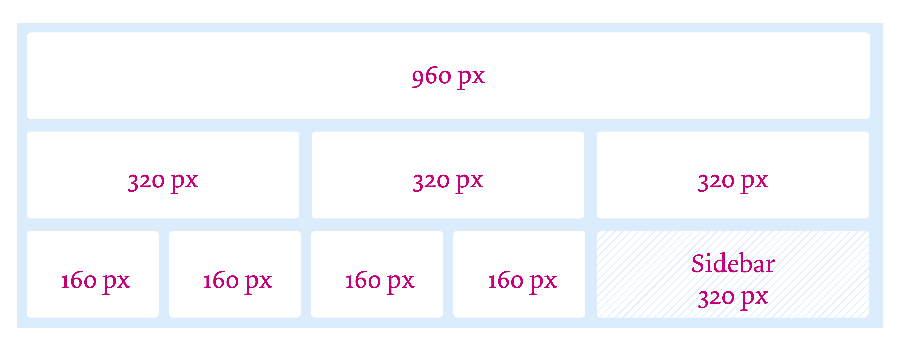

Premezza
Mi è stato chiesto di ripensare l'aspetto di Navigator, widget del plugin Wordlift. Lo scopo è rendere il prodotto meno invasivo e più strutturato per facilitarne l'inserimento all'interno della pagina web.
Mi è stato chiesto di valorizzare il contenuto visivo e di valutare la modularità del prodotto per facilitarne l'integrazione in un'ampio spettro di contesti.
Ho cominciato valutando l'ambiente per cui è stato realizzato. Ho preso in considerazione due griglie di dimensioni diverse: una di ampiezza massima di 960px e una di 1040px.
Stato attuale
Il pugin al momento si presenta in modo confuso.
Alle immagini non viene lasciato nessun respiro e la scelta di comprimere l'altezza del plugin compromette la leggibilità del testo e dell'immagine.
La proposta che viene offerta al lettore non appare immediatamente comprensibile, è del tutto assente una preview di quello che andrà a leggere cliccando sul link. Non viene fatto nessun uso del colore, né viene proposta al blogger la possibilità
di inserire un colore di riferimento.
Favorire la scelta
La legge di Hick afferma che il tempo necessario per prendere una decisione varia in funzione del numero di opzioni disponibili. La legge di Hick influisce sul design di qualunque sistema o processo che richieda l’adozione di decisioni semplici a fronte
di più opzioni.
Tutte le attività prevedono quattro fasi fondamentali:
- Identificazione di un problema o obiettivo.
- Valutazione delle opzioni disponibili per risolvere il problema o conseguire un risultato.
- Scelta di un’opzione.
- Implementazione dell’opzione.
La legge di Hick è applicabile soprattutto alle attività che prevedano l’adozione di decisioni semplici in base a una corrispondenza univoca tra stimolo e risposta. Nella progettazione di attività che prevedano una capacità di risposta tempestiva, è opportuno
ridurre al minimo il numero di opzioni, in modo da limitare i tempi di risposta e la possibilità di errori.
Il tempo a nostra disposizione per catturare l'attenzione del lettore e generare click è infinitesimale, per questo motivo ho scelto di limitare la scelta dell'utente a un massimo di quattro opzioni. Quattro opzioni coprono le quattro entità di WL e
allo stesso tempo si incastrano nella pagina senza disturbare il lettore.
Griglie di costruzione
Per raggiungere il suo scopo, Navigator non può non essere pensato perché si inserisca coerentemente in diversi tipi di ambiente. Non conoscendo i diversi layout in cui questo plugin andrà a inserirsi mi sono affidato alle griglie di costruzione. Dopo
aver studiato le griglie utilizzate nelle pagine web di potenziali utilizzatori di WL, ho scelto di costruire il prodotto su due standard diversi: una griglia costruita su un'ampiezza massima di 960 px e una su un ampiezza massima di 1040 px.

Pannello di backend
Allo stato dei fatti Navigator non propone nessuna possibilità di personallizzazione del plugin. Valutando lo scopo e la necessità di integrazione che un widget di questo tipo deve soddisfare, potrebbe essere interessante valutare la possibilità di un minimo grado di personalizzazione del layout.
Proporrei di lasciare la libertà al blogger di intervenire sull'aspetto dell'widget. In particolare:
- Possibilità di scegliere tra un ventaglio di layout preimpostati
- Possibilità di attivare e disattivare colori per l'identificazione del tipo di legame che lega le due entità
- Attivazione e disattivazione di una brevissima preview dell'articolo
- Possibilità di inserire video
Palettes Colori
Per identificare le singole entità all'interno del plugin ho scelto di utilizzare delle flag con lo sfondo di quattro colori diversi. Ho deciso di inserire questa opzione per consentire al lettore di identificare a colpo d'occhio la direzione che prenderà il suo percorso di lettura seguendo il link consigliato.
Ho scelto di proporre all'autore due palette colori simili fra loro allo stesso tempo adatte ad ambienti diversi, mantenendo la possibilità di disattivare il colore e mantenere il flag dell'entità a cui fa riferimento la card.
Palette colori 1
Palette colori 2
Uso delle immagini
Le immagini giocano un ruolo chiave nel percorso percettivo/decisionale del lettore. Mi sono impegnato a costruire un modulo che avesse l'immagine come elemento principe e interattivo. Nel corso del progetto
di progettazione ho valutato la possibilità di sostituire l'immagine con un video, in condizioni ottimali di connessione, quindi sostituendo il video con un immagine se l'utente si collega da mobile o tablet. L'inserimento dei video può essere
un elemnto di approfondimento purché si restringa la sua portata comunicativa:
- Il video viene riprodotto senza audio
- La velocità di riproduzione viene rallentata a un quarto di quella normale
- L'autoplay del video viene attivato soltanto nel momento in cui l'utente sposta il mouse nell'area della card
Queste condizioni ci consentono di trsformare il video in un'immagine in movimento e quindi di incuriosire il lettore senza disturbare la sua esperienza di navigazione con un contenuto troppo invasivo.